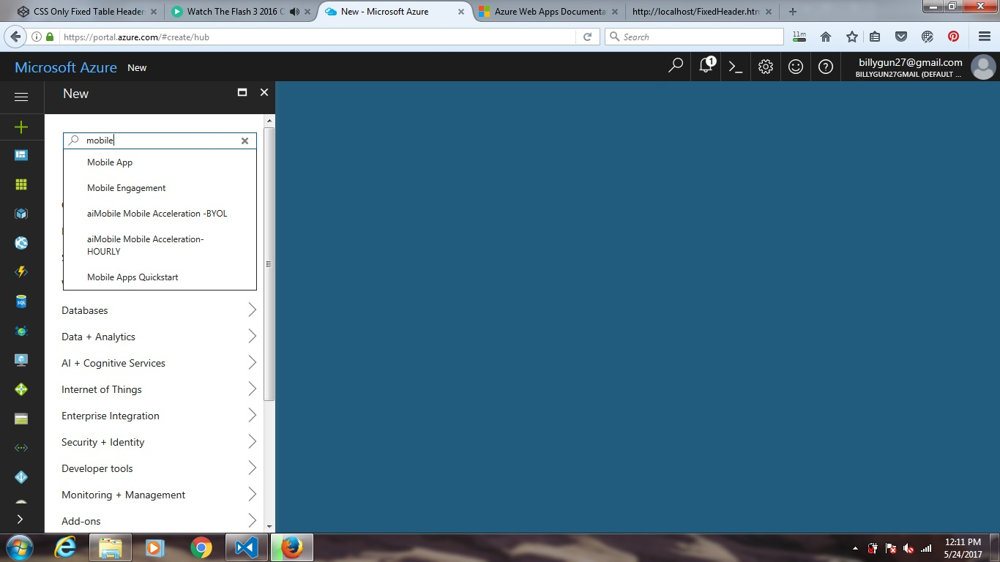
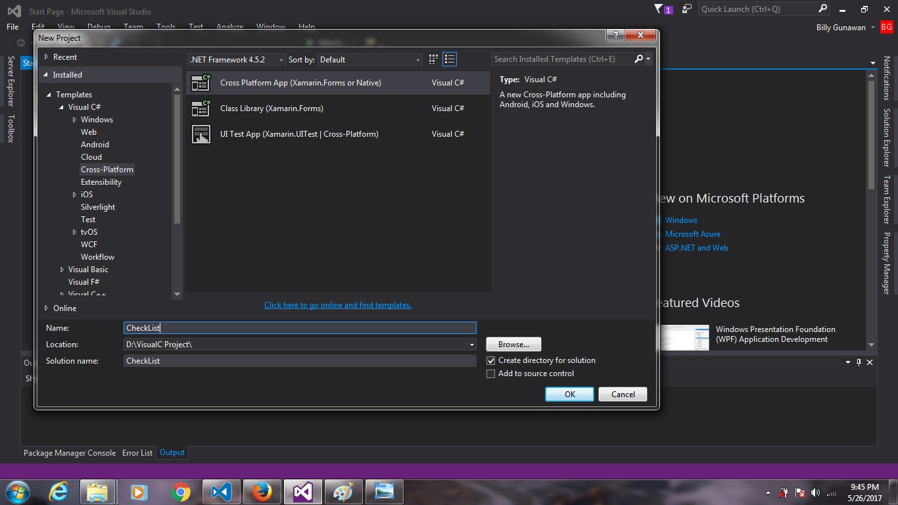

Membuat Aplikasi Sederhana dengan Xamarin
Xamarin adalah bagian dari tools yang dimiliki Visual Studio untuk membuat Aplikasi Cross Platform. Aplikasi yang dapat dibuat terdiri dari Android, IOS dan Windows Phone. Bahasa yang digunakan Xamarin adalah bahasa C#. Tentu saat pertama kali ingin mempelajari hal baru kita akan kebingungan untuk memulai dari mana. Oleh karena Saya berharap tutorial ini dapat membantu siapapun yang ingin belajar Xamarin. Beberapa kode yang ada di tutorial ini saya peroleh dari dicoding dan tutorial yang diberikan Microsoft saat Saya mengikuti seleksi dari Microsoft Student Partner, jadi Saya Mohon Maaf jika ada kesamaan kode. Tutorial ini dibuat untuk merangkum semua materi yang telah saya peroleh dari berbagai sumber.
Aplikasi yang akan saya buat adalah aplikasi To Do List menggunaknan Xamarin dan Microsoft Azure sebagai database. Aplikasi ini dapat digunakan untuk mencatat banyak hal seperti rencana kegiatan, daftar barang dan hal-hal yang ingin dilakukan
Berikut langkah-langkah pembuatan aplikasi ini:
1. masuk ke Portal Azure
2. pilih new lalu cari Mobile App QuickStart

3. klik Mobile App QuickStart
4. Isi data yang diperlukan sesuai keinginan kalian. Untuk Appname nama ini akan digunakan
sebagai url untuk keperluan mengakses azure dari xamarin app yang akan kalian buat
5. Setelah proses pembuatan appservice selesai maka anda dapat melihat overview. Disana akan ada URL yang dapat digunakan untuk
mengakses azure, namanya akan sama seperti AppName tadi. Setelah itu pilaih Easy Table untuk membuat database, jika kesulitan tulis saja
Easy Table pada database
5. Pada database tambahkan kolom baru untuk tempat data yang kalian ingin masukkan,sesuaikan tipe data sesuai dengan kebutuhan.
Disini Saya membuat kolom dengan nama Title, Desc, dan Status dan tipe nya String.
6. Setelah App Service Azure siap kita bisa mulai membuat aplikasi dengan xamarin. Langkah selanjutnya adalah
membuka Visual Studio yang sudah terinstall xamarin didalamnya
7. Setelah itu pilih File > New > Project
8. Pilih Cross Platform App (Xamarin.form or Native)

9. Pilih Xamarin.form dan Shared Project
10. Setelah Project selesai dibuat maka akan ada solution explorer di sebelah kanan disana anda
dapat menambah file atau folder untuk project anda
11. Di Solution Explorer jika anda klik kanan padah salah satu item maka akan muncul pilihan add dimana kalian
bisa menambah folder atau script
12. Setelah itu jangan lupa untuk mendownload package yang diperlukan untuk azure melalui Tools > Nuget Package Manager >
Manage Nuget Package for Solution..
13. Cari dan Install Microsoft.Azure.Mobile.Client dan tunggu hingga proses selesai
14. Setelah semua persiapan telah selesai kita bis mulai menulis kode untuk aplikasi yang akan kita buat.
Pertama kita akan membuat class yang bernama Constants.cs disini saya membuat semua class dalam
satu folder agar terlihat lebih rapi, namun ini tergantung dari preferensi anda. Sekedar mengingatkan jika anda menggunakan
class di folder tersebut jangan lupa menambahkan
using NamaProject.NamaFolder;
pada class yang ingin mengakses class yang ada di folder tersebut.
kembali lagi pada Constants.cs tambahkan kode berikut:
using System;
using System.Collections.Generic;
using System.Text;
namespace CheckList.Logic
{
public static class Constants
{
public static string ApplicationURL = @"http://simpledata.azurewebsites.net";
}
}
Jangan lupa untuk mengubah isi ApplicationURL sesuai dengan URL yang anda peroleh dari azure.
Selain itu gunakan namespace yang sesuai dengan nama project anda. Saya menggunakan namespace Checklist.Logic karena project saya bernama Checklist dan class
ini berada di folder logic. Oleh karena itu sesuaikan dengan nama project anda dan jika tidak menggunakan folder, namespace namaproject saja sudah cukup
15. Setelah itu buat object untuk data yang kita buat, Class ini akan berisi sesuai dengan nama data yang kita buat di Easy Table, Karna saya menamai Table saya Target, maka class baru yang saya buat akan saya namai Target.cs. kemudian isinya sama seperti nama yang saya masukkan ke table Target. Isi codenya seperti ini namun jangan lupa untuk menyesuaikan kode anda seperti pengaturan yang sudah anda buat pada Azure sebelumnya
using Microsoft.WindowsAzure.MobileServices;
using Newtonsoft.Json;
namespace CheckList.Logic
{
public class Target
{
private string _id;
[JsonProperty(PropertyName = "id")]
public string Id {
get { return _id; }
set { _id = value; }
}
private string _Title;
[JsonProperty(PropertyName = "Title")]
public string Title {
get { return _Title; }
set { _Title = value; }
}
private string _Desc;
[JsonProperty(PropertyName = "Desc")]
public string Desc {
get { return _Desc; }
set { _Desc = value; }
}
private string _Status;
[JsonProperty(PropertyName = "Status")]
public string Status {
get { return _Status; }
set { _Status = value; }
}
[Version]
public string Version { get; set; }
}
}
16. Lalu buat class lagi untuk memanipulasi data sepeti mengambil data, menambah dan menghapus data dari azure. Saya menamai Class saya DataManager.cs isi nya kurang lebih sebagai berikut:
using System;
using System.Collections.Generic;
using System.Linq;
using System.Text;
using System.Threading.Tasks;
using Microsoft.WindowsAzure.MobileServices;
using System.Diagnostics;
using System.Collections.ObjectModel;
using System.Net.Http;
using System.Net.Http.Headers;
using Newtonsoft.Json;
using CheckList;
using CheckList.Logic;
namespace CheckList.Logic
{
public class DataManager
{
private IMobileServiceTable _ActivityList;
public DataManager() {
var client = new MobileServiceClient(Constants.ApplicationURL);
_ActivityList = client.GetTable();
}
public async Task> GetDataAsync() {
try {
IEnumerable targets = await _ActivityList.ToEnumerableAsync();
return new ObservableCollection(targets);
}
catch (MobileServiceInvalidOperationException msioe) {
Debug.WriteLine("@Invalid sync operation: {0}", msioe.Message);
}
catch (Exception e) {
Debug.WriteLine(@"Sync error: {0}", e.Message);
}
return null;
}
public async Task SaveDataAsync(Target target) {
if (target.Id == null) {
await _ActivityList.InsertAsync(target);
}
else {
await _ActivityList.UpdateAsync(target);
}
}
public async Task DeleteDataAsync(Target target) {
await _ActivityList.DeleteAsync(target);
}
}
}
17. Berikutnya buat Class bernama ActivityIndicatorScope.cs untuk memberikan indikasi loading untuk memberi tahu pengguna bahwa aplikasi sedang mengambil data dari Azure. Berikut isi kodenya:
using System;
using System.Threading.Tasks;
using Xamarin.Forms;
namespace CheckList
{
public class ActivityIndicatorScope : IDisposable {
private bool _showIndicator;
private ActivityIndicator _indicator;
private Task _indicatorDelay;
public ActivityIndicatorScope(ActivityIndicator indicator, bool showIndicator) {
_indicator = indicator;
_showIndicator = showIndicator;
if (showIndicator) {
_indicatorDelay = Task.Delay(2000);
SetIndicatorActivity(true);
}
else {
_indicatorDelay = Task.FromResult(0);
}
}
private void SetIndicatorActivity(bool isActive) {
_indicator.IsVisible = isActive;
_indicator.IsRunning = isActive;
}
public void Dispose() {
if (_showIndicator) {
_indicatorDelay.ContinueWith(t => SetIndicatorActivity(false),
TaskScheduler.FromCurrentSynchronizationContext());
}
}
}
}
18. Setelah program untuk mengolah data selesai dibuat kita bisa mulai membuat page. Untuk Halaman utama anda dapat menggunakan page default yaitu MainPage.xaml atau menambah page baru dan mengganti new MainPage() di App.xaml.cs menjadi new namaPageBaru(). Disini saya akan memnggunakan MainPage.xaml sebagai Page utama saya. pada MainPage.xaml gunakan kode ini :
<?xml version="1.0" encoding="utf-8" ?>
<ContentPage xmlns="http://xamarin.com/schemas/2014/forms"
xmlns:x="http://schemas.microsoft.com/winfx/2009/xaml"
xmlns:local="clr-namespace:CheckList"
x:Class="CheckList.MainPage" Title="Activity List">
<ContentPage.ToolbarItems BackgroundColor="yellow" >
<ToolbarItem Text="Edit" Clicked="EditList_OnClicked"/>
<ToolbarItem Text="Add" Clicked="NewGoal_OnClicked"/>
</ContentPage.ToolbarItems>
<ContentPage.Content>
<Grid>
<Grid.RowDefinitions>
<RowDefinition Height="*" />
</Grid.RowDefinitions>
<ActivityIndicator
HorizontalOptions="Center"
VerticalOptions="Center"
IsVisible="False"
IsEnabled="True"
x:Name="syncIndicator"/>
<ListView x:Name="ActivityList" ItemTapped="EditList_OnItemTapped" IsPullToRefreshEnabled="True" Refreshing="ListViewBarang_OnRefreshing">
<ListView.ItemTemplate>
<DataTemplate>
<ImageCell x:Name="ActList" ImageSource="{Binding Status}" Text="{Binding Title}" Tapped="OnTapped" Detail="{Binding Desc}" />
</DataTemplate>
</ListView.ItemTemplate>
</ListView>
</Grid>
</ContentPage.Content>
</ContentPage>
Pada MainPage.xaml.cs tambahkan :
using System;
using System.Collections.Generic;
using System.Linq;
using System.Text;
using System.Threading.Tasks;
using Xamarin.Forms;
using Xamarin.Forms.Xaml;
using CheckList.Logic;
namespace CheckList
{
public partial class MainPage : ContentPage
{
private DataManager _dataManager = new DataManager();
public MainPage()
{
InitializeComponent();
}
protected override async void OnAppearing() {
base.OnAppearing();
await RefreshItems(true);
}
private async Task RefreshItems(bool showActivityIndicator) {
using (var scope = new ActivityIndicatorScope(syncIndicator, showActivityIndicator)) {
ActivityList.ItemsSource = await _dataManager.GetDataAsync();
}
}
private async void NewGoal_OnClicked(object sender, EventArgs e) {
AddNewActivityPage addPage = new AddNewActivityPage(true);
await Navigation.PushAsync(addPage);
}
Target item;
private async void EditList_OnItemTapped(object sender, ItemTappedEventArgs e) {
item = (Target)e.Item;
if (item.Status == "checkedbox.png") {
item.Status = "checkbox.png";
}
else {
item.Status = "checkedbox.png";
;
}
await _dataManager.SaveDataAsync(item);
await RefreshItems(true);
}
private async void EditList_OnClicked(object sender, EventArgs e) {
AddNewActivityPage addPage = new AddNewActivityPage();
addPage.BindingContext = item;
await Navigation.PushAsync(addPage);
}
private async void ListViewBarang_OnRefreshing(object sender, EventArgs e) {
var list = (ListView)sender;
Exception error = null;
try {
await RefreshItems(false);
}
catch (Exception ex) {
error = ex;
}
finally {
list.EndRefresh();
}
if (error != null) {
await DisplayAlert("Refresh Error !", "Couldn't refresh data (" + error.Message + ")", "OK");
}
}
}
}
Jangan lupa pada Andorid di folder Resource > Drawable tambahkan 2 gambar ini. Jika ingin menarget iOS tambahkan juga gambar ini di folder Drawable19. Lalu buat Page baru yang bertugas untuk menginput dan mengubah data dari list yang kita buat. Page ini akan diberi nama AddNewActivityPage.xaml . Berikut isi Kodenya:
<?xml version="1.0" encoding="utf-8" ?>
<ContentPage xmlns="http://xamarin.com/schemas/2014/forms"
xmlns:x="http://schemas.microsoft.com/winfx/2009/xaml"
x:Class="CheckList.AddNewActivityPage">
<ContentPage.Content>
<StackLayout x:Name="gvAct" VerticalOptions="StartAndExpand">
<Label Text="Title" />
<Entry x:Name="ActTitle" Text="{Binding Title}" Placeholder="Wonderful Day" />
<Label Text="Desc" />
<Entry x:Name="ActDesc" Text="{Binding Desc}" Placeholder="Another Aventure Await!" />
<Button Text="Save" Clicked="BtnSave_OnClick" />
<Button Text="Delete" Clicked="BtnDel_OnClick" />
<Button Text="Return" Clicked="Return_OnClick" />
</StackLayout>
</ContentPage.Content>
</ContentPage>
Lalu pada AddNewActivityPage.xaml.cs tambahkan :
using System;
using System.Collections.Generic;
using System.Linq;
using System.Text;
using System.Threading.Tasks;
using Xamarin.Forms;
using Xamarin.Forms.Xaml;
using CheckList.Logic;
namespace CheckList
{
[XamlCompilation(XamlCompilationOptions.Compile)]
public partial class AddNewActivityPage : ContentPage
{
bool AddList;
private DataManager _dataManager = new DataManager();
public AddNewActivityPage ()
{
InitializeComponent ();
}
public AddNewActivityPage(bool ListType) {
InitializeComponent();
AddList = ListType;
if (AddList) {
ActTitle.Focus();
}
}
private void ClearAll() {
foreach (var ctr in gvAct.Children) {
if (ctr is Entry) {
var item = ctr as Entry;
item.Text = string.Empty;
}
}
}
private async void BtnSave_OnClick(object sender, EventArgs e) {
if (AddList) {
var target = new Target() {
Title = ActTitle.Text,
Desc = ActDesc.Text,
Status = "checkbox.png",
};
await _dataManager.SaveDataAsync(target);
ClearAll();
await DisplayAlert("Keterangan", "Activity berhasil ditambah !", "OK");
}
else {
var target = (Target)this.BindingContext;
await _dataManager.SaveDataAsync(target);
await DisplayAlert("Keterangan", "Activity berhasil diupdate !", "OK");
}
await Navigation.PopAsync();
}
private async void BtnDel_OnClick(object sender, EventArgs e) {
var target = (Target)this.BindingContext;
await _dataManager.DeleteDataAsync(target);
await DisplayAlert("Keterangan", "Activity berhasil dihapus !", "OK");
await Navigation.PopAsync();
}
void Return_OnClick(object sender, EventArgs e) {
Navigation.PopAsync();
}
}
}
20. Pada App.xaml.cs modifikasi kodenya untuk membuat Navigasi seperti ini :
using System;
using System.Collections.Generic;
using System.Linq;
using System.Text;
using Xamarin.Forms;
namespace CheckList
{
public partial class App : Application
{
public App ()
{
InitializeComponent();
MainPage = new NavigationPage(new MainPage()) {
BarBackgroundColor = Color.YellowGreen
};
}
protected override void OnStart ()
{
// Handle when your app starts
}
protected override void OnSleep ()
{
// Handle when your app sleeps
}
protected override void OnResume ()
{
// Handle when your app resumes
}
}
}
21. Langkah terakhir adalah build project yang kita buat dan di run di simulator atau di android device yang kalian miliki.
Jika berhasil maka aplikasi siap digunakan.Berikut hasil jadi aplikasinya